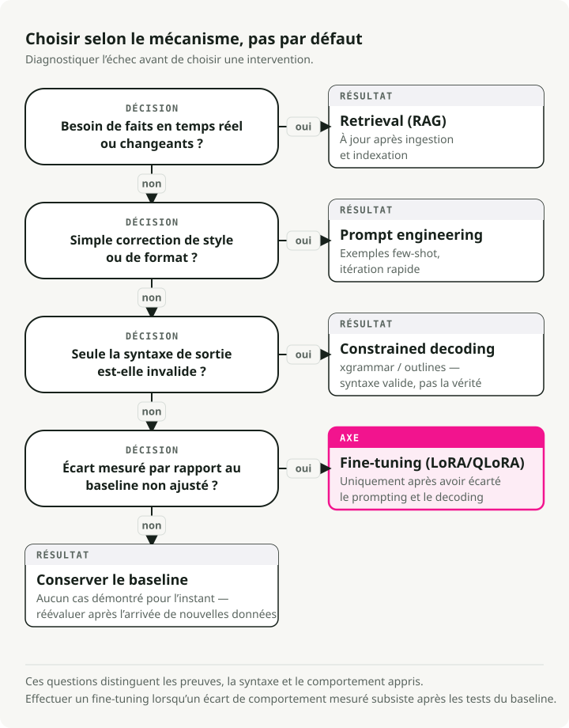
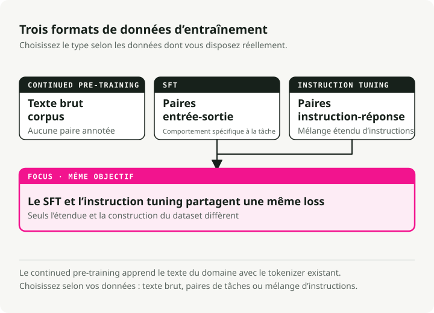
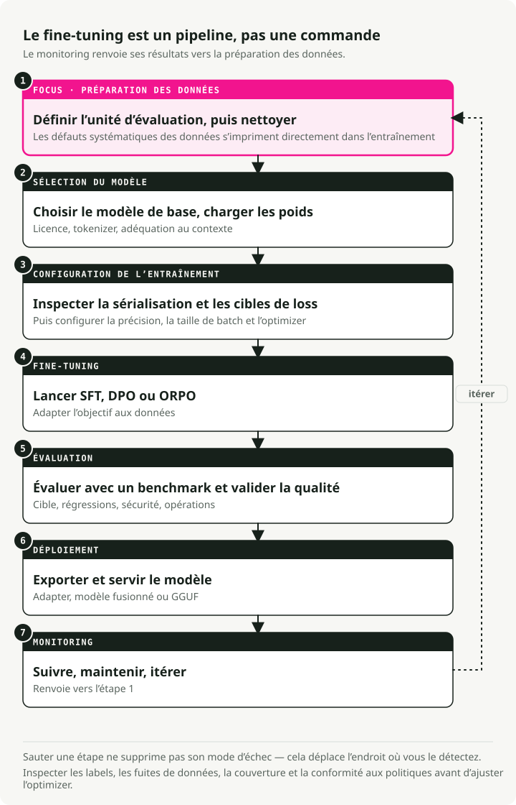
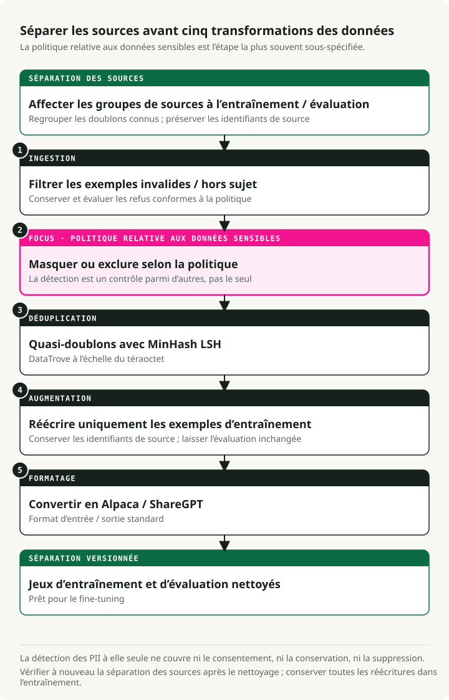
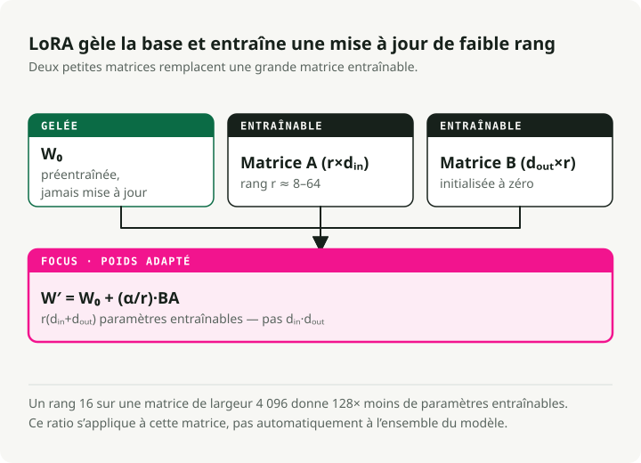
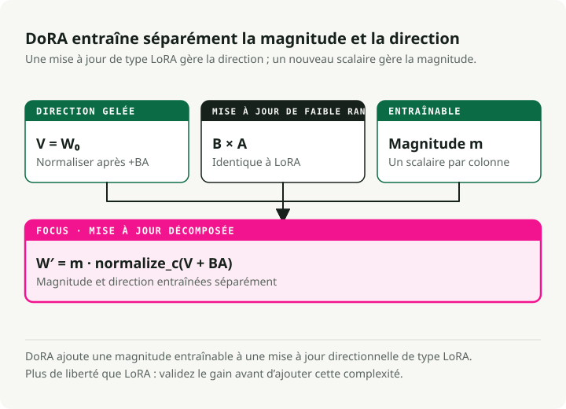
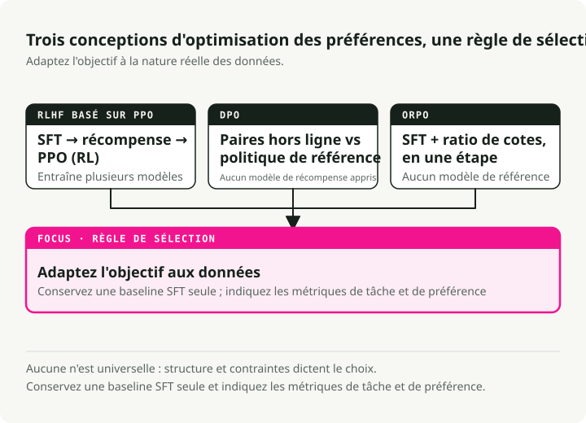
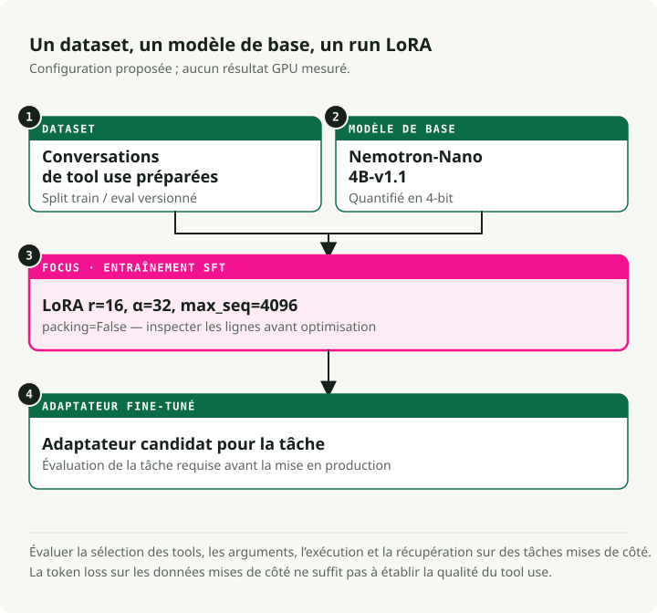
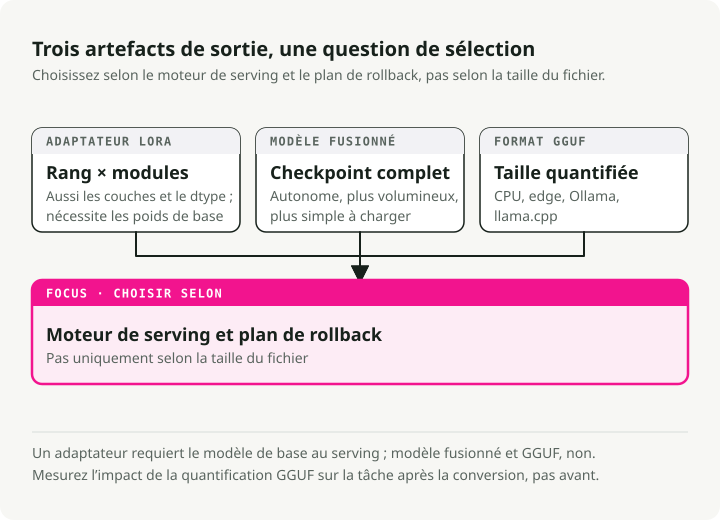

Traduction automatique
Cet article a été traduit automatiquement depuis la version originale en anglais.
Guide de fine-tuning des LLM : LoRA, QLoRA, DoRA, Unsloth, Axolotl et déploiement
La plupart des projets de fine-tuning que j’ai vus échouent non pas à l’entraînement, mais dans les étapes avant et après : mauvaises données, mauvais modèle de base, pas de vraie évaluation. L’entraînement proprement dit est la partie facile. Ce guide est ce que j’aurais aimé avoir avant mon premier fine-tuning sérieux — quand le faire, quand ne pas le faire, les méthodes qui fonctionnent aujourd’hui (LoRA, QLoRA, DoRA, ORPO), et comment faire passer un modèle d’un notebook à un endpoint de serving.
Faut-il faire du fine-tuning tout court ?
Avant de dépenser des heures GPU, décidez si le fine-tuning est le bon outil pour le problème que vous avez devant vous.

Fine-tuning vs RAG
Ne faites pas de fine-tuning juste pour ajouter de la « connaissance ». Utilisez plutôt cette distinction :
| Fonctionnalité | Fine-Tuning | RAG (Retrieval-Augmented Generation) |
|---|---|---|
| Fonction principale | Modifie les poids internes pour enseigner des compétences, styles ou comportements | Fournit un contexte externe et à jour au moment de l’inférence |
| Le mieux adapté à | • Styles conversationnels spécifiques • Suivi d’instructions complexes • Raisonnement métier |
• Données qui changent rapidement (news, cours boursiers) • Réduction des hallucinations (grounding) • Citation des sources |
| Gestion des connaissances | Internalise des motifs, pas des faits | Récupère des faits depuis une base de connaissances externe |
| Fréquence de mise à jour | Nécessite un réentraînement pour les mises à jour | Se met à jour immédiatement avec de nouveaux documents |
Fine-tuning vs prompt engineering
Les LLM modernes réagissent remarquablement bien à des prompts bien conçus. Épuisez les possibilités du prompting avant de recourir au fine-tuning.
| Aspect | Fine-Tuning | Prompt Engineering |
|---|---|---|
| Coût de mise en place | Élevé (curation des données, calcul GPU, itérations) | Faible (raffinement itératif des prompts) |
| Flexibilité | Figé après l’entraînement | Modifiable à tout moment sans réentraînement |
| Format/Style | Idéal pour des formats de sortie complexes et cohérents | Bon pour un formatage simple avec des exemples few-shot |
| Latence | Plus faible (pas de longs prompts système) | Plus élevée (taxe de contexte à chaque requête) |
| Le mieux adapté à | Comportements complexes, distillation, coût à l’échelle | Itération rapide, exigences changeantes |
[!TIP] Essayez d’abord le prompting Commencez avec des exemples few-shot dans le prompt. Si le comportement reste incohérent, essayez le SGR avant de passer au fine-tuning.
Fine-tuning vs Schema-Guided Reasoning (SGR)
Des bibliothèques comme xgrammar et outlines contraignent les sorties du modèle à l’inférence à l’aide de machines à états finis. Elles fonctionnent avec des modèles de base directement, sans entraînement.
La valeur du SGR ne se limite pas aux sorties structurées. C’est aussi la cohérence : la même forme d’entrée donne la même forme de sortie à chaque fois, sans rien réentraîner. Quand le prompting seul produit des résultats incohérents, le SGR fixe le motif de sortie au moment du décodage.
| Aspect | SGR (sans fine-tuning) | Fine-Tuning |
|---|---|---|
| Mise en place | Immédiate — définir un schéma, déployer | Nécessite curation des données, calcul GPU, itérations |
| Cohérence | Structure garantie, motifs fiables | Comportement appris (peut encore varier) |
| Flexibilité | Changer le schéma à tout moment sans réentraînement | Figé après l’entraînement |
| Latence | Léger surcoût (le modèle peut « lutter » contre le schéma) | Plus faible (le modèle produit naturellement le format) |
| Le mieux adapté à | Sorties structurées, comportement cohérent | Raisonnement complexe, changements profonds de comportement |
Un ordre pratique :
- Commencez avec le prompting et des exemples few-shot pour le formatage de base.
- Ajoutez le SGR (
xgrammarououtlines) quand le format est incohérent. - Faites du fine-tuning seulement quand vous avez besoin de changements de comportement qu’un schéma ne peut pas imposer.
Référence rapide : associer les problèmes aux solutions
| Problème | Meilleure solution | Pourquoi ? |
|---|---|---|
| Connaissances manquantes | RAG | Les modèles hallucinent des faits. La récupération fournit un contexte ancré et à jour |
| Mauvais format/ton | Prompt Engineering | Les modèles modernes suivent bien les instructions de style via des exemples few-shot |
| Sorties incohérentes | SGR (xgrammar) | Structure garantie et fiabilité sans entraînement |
| Changements complexes de comportement | Fine-Tuning (SFT) | Persona profonde, motifs de raisonnement ou workflows multi-étapes |
| Sécurité/préférence | Alignment (DPO) | Quand les sorties sont correctes mais ne correspondent pas aux préférences |
| Latence/coût à l’échelle | Distillation (SFT) | Entraîner un plus petit modèle élève sur les sorties d’un plus grand modèle enseignant |
| Réduire la taille du modèle | Quantization | Pas d’entraînement — compresser les poids (FP16→INT4) pour une inférence plus rapide |
Quand l’équation devient réellement rentable
Le fine-tuning devient rentable quand le trafic est élevé et les exigences stables. Un setup RAG solide transporte souvent 2 000 tokens de contexte à chaque appel : prompt système, documents récupérés, exemples few-shot. C’est une taxe de contexte que vous payez à chaque requête.
Un modèle fine-tuné absorbe l’essentiel de ces instructions dans ses poids, ce qui fait tomber le prompt d’environ 2 000 tokens à environ 50. À volume suffisant, cela amortit le coût d’entraînement en quelques semaines.
[!TIP] Le setup hybride Le schéma que je vois le plus souvent en production : un modèle 8B fine-tuné couplé à un petit retriever RAG pour les faits. Il bat souvent un modèle 70B+ piloté par prompt à la fois en précision et en coût.
Types de fine-tuning
Le fine-tuning prend trois formes principales. Elles diffèrent par le type de données nécessaire et par ce qu’elles apprennent au modèle.

1. Continued pre-training (non supervisé)
Vous entraînez le modèle de base sur davantage de texte brut, sans labels. Il continue la prédiction du token suivant, comme lors du pré-entraînement initial.
Quand l’utiliser :
- Le domaine contient du vocabulaire que le modèle de base n’a jamais vu (médical, juridique, codebases internes).
- Vous avez des masses de texte métier mais pas de paires annotées (entrée, sortie).
- Le modèle de base gère mal la terminologie spécifique du domaine.
Exemple : entraînement sur des millions de notes cliniques pour que le modèle assimile les abréviations médicales, les noms de médicaments et les workflows cliniques.
2. Supervised fine-tuning (SFT)
Le SFT s’entraîne sur des paires annotées (entrée, sortie). Vous montrez au modèle la sortie exacte attendue pour chaque entrée.
Quand l’utiliser :
- Vous avez une tâche spécifique avec un format d’entrée/sortie propre.
- Vous avez des données annotées de qualité, même en petite quantité.
- Vous avez besoin d’un comportement prévisible sur une forme d’entrée connue.
Exemple : entraînement sur des paires (description de requête SQL, code SQL) pour du text-to-SQL.
{
"input": "Get all users who signed up last month",
"output": "SELECT * FROM users WHERE signup_date >= DATE_SUB(NOW(), INTERVAL 1 MONTH)"
}
3. Instruction tuning
L’instruction tuning est un cas particulier de SFT conçu pour amener les modèles à suivre une grande variété d’instructions en langage naturel. Les données d’entraînement sont des paires (instruction, réponse) couvrant de nombreuses tâches différentes.
Quand l’utiliser :
- Vous voulez un assistant généraliste (comme ChatGPT ou Claude).
- Le modèle doit traiter des requêtes variées et ouvertes.
- Vous construisez une interface de chat.
Exemple : entraînement sur des milliers d’instructions diverses comme « Résume cet article », « Écris un poème sur X », « Explique Y en termes simples ».
Comparaison
| Aspect | Continued Pre-training | SFT | Instruction Tuning |
|---|---|---|---|
| Données | Texte brut | Paires (entrée, sortie) | Paires (instruction, réponse) |
| Labels | Aucun (non supervisé) | Spécifiques à la tâche | Tâches diverses |
| Objectif | Connaissance métier | Comportement spécifique à la tâche | Suivre n’importe quelle instruction |
| Volume de données | Élevé (millions de tokens) | Petit-Moyen (500-10k exemples) | Moyen-Élevé (10k-100k exemples) |
[!NOTE] Ce que les gens font réellement La plupart des praticiens utilisent le SFT pour des tâches spécifiques et l’instruction tuning pour des assistants de chat. Le continued pre-training est plus rare car il nécessite d’énormes quantités de texte métier et beaucoup de calcul.
Le pipeline de fine-tuning en 7 étapes
Le fine-tuning est un pipeline, pas une commande unique. Chaque étape a ses propres modes d’échec, et en sauter une se voit généralement plus tard sous la forme d’un mauvais modèle.

Chaque étape s’appuie sur la précédente :
- Préparation des données — Nettoyer, dédupliquer et formater vos données (étape au plus fort impact)
- Sélection du modèle — Choisir le bon modèle de base et charger les poids
- Configuration de l’entraînement — Configurer le hardware, les hyperparamètres et la stratégie d’optimisation
- Fine-tuning — Lancer un entraînement SFT, DPO ou ORPO
- Évaluation — Benchmarker les performances et valider la qualité
- Déploiement — Exporter et servir votre modèle
- Monitoring — Suivre les performances, maintenir et itérer
[!WARNING] Les données sont la fondation L’étape 1 (préparation des données) est celle qui offre le plus de levier. Les algorithmes ne corrigent pas les défauts sur lesquels vous avez entraîné le modèle. 500 à 1 000 exemples soigneusement sélectionnés battent presque toujours 50 000 exemples bruités.
Étape 1 : Préparation des données
La plupart des projets de fine-tuning échouent ici, pas à l’entraînement. La préparation moderne des données, c’est plus qu’un regex appliqué à des CSV.

Le pipeline de données en 5 étapes
Les équipes qui prennent ce sujet au sérieux s’appuient sur des outils comme DataTrove (Hugging Face) et Distilabel (Argilla) plutôt que sur des scripts maison.
1. Ingestion et filtrage
- Action : supprimer les refus (« I cannot answer that »), l’UTF-8 corrompu et les langues non ciblées.
- Outils : Trafilatura pour l’extraction, FastText pour l’identification de langue.
2. Nettoyage des PII (obligatoire en entreprise)
- Action : détecter et masquer les emails, adresses IP et numéros de téléphone avant l’entraînement.
- Outils : Microsoft Presidio ou scrubadub.
- Pourquoi : entraîner sur des PII client est un incident de sécurité en attente.
3. Déduplication (MinHash LSH)
- Action : supprimer les quasi-doublons pour éviter que le modèle ne les mémorise.
- Outils : DataTrove gère bien le traitement à l’échelle du téraoctet.
4. Augmentation synthétique
- Action : utiliser un modèle enseignant plus fort (GPT-4o, DeepSeek-V3) pour réécrire des données brutes en paires instruction-réponse propres.
- Outils : Distilabel.
- Pourquoi c’est important : c’est généralement là que se trouve le plus gros gain de qualité.
5. Formatage
- Action : convertir vers un format standard (Alpaca ou ShareGPT).
Exemples de formats de données
Format Alpaca (suivi d’instructions) :
{
"instruction": "Summarize the following text.",
"input": "The text to be summarized...",
"output": "This is the summary."
}
Format ShareGPT/ChatML (conversationnel) :
{
"conversations": [
{ "from": "user", "value": "Hello, who are you?" },
{ "from": "assistant", "value": "I am a helpful AI assistant." }
]
}
Ce qui compte vraiment
- La qualité avant la quantité. 500 à 1 000 exemples soigneusement sélectionnés battent 50 000 exemples bruités.
- La propreté. Supprimez le texte non pertinent, normalisez les espaces, gardez un formatage cohérent.
- L’équilibre. Répartissez la couverture entre les sujets pour éviter que le modèle ne surapprenne le segment dominant.
- Le nettoyage des PII n’est pas négociable pour tout système de production.
Étape 2 : Sélection du modèle et hardware
Choisir le modèle de base et comprendre le minimum GPU requis détermine ce que vous pouvez réellement entraîner.
Hardware selon la taille du modèle
La mémoire est la contrainte dure. Les chiffres ci-dessous concernent l’entraînement, pas l’inférence.
| Niveau | Configuration hardware | Capacité | Cas d’usage |
|---|---|---|---|
| Standard entreprise | 8x NVIDIA H100 (80GB) | Full Fine-Tuning | Entraîner des modèles 70B avec long contexte (32k+) à vitesse maximale |
| Minimum viable (pro) | 4x NVIDIA A100 (80GB) | QLoRA / LoRA | Fine-tuner Qwen 72B ou Llama 70B en 4-bit |
| R&D locale | 4x RTX 6000 Ada (48GB) | QLoRA | Workstation on-prem pour contraintes de confidentialité des données |
| Hobbyist/Indie | 1-2x RTX 3090/4090 (24GB) | QLoRA | Fine-tuner des modèles 7B-32B avec des méthodes efficaces en paramètres |
[!TIP] Les GPU grand public vont plus loin qu’on ne le croit Avec QLoRA et Unsloth, une seule RTX 4090 (24GB) peut fine-tuner des modèles jusqu’à 32B paramètres. La 3090 reste solide pour l’entraînement 7B-13B. Le palier 24GB de VRAM suffit pour la plupart des travaux sérieux hors contexte long.
[!NOTE] Pourquoi les H100 La raison principale n’est pas la VRAM, mais la précision FP8. Les H100 prennent en charge l’entraînement FP8 natif, ce qui double approximativement la mémoire et le débit effectifs par rapport aux A100. Pour des contextes à 128k tokens, le FP8 sur H100 est souvent le seul moyen de faire tenir une taille de batch raisonnable.
L’arithmétique mémoire
Pour fine-tuner un modèle 72B, le GPU doit contenir :
- Les poids du modèle en précision 16-bit : ~144 GB.
- Les gradients et l’état de l’optimiseur : environ 2-3× la taille du modèle selon l’optimiseur (AdamW est dans la fourchette haute).
- Les activations : augmentent avec la longueur de contexte, par exemple 32k tokens.
C’est la raison pour laquelle QLoRA (base 4-bit + adaptateurs LoRA) est le choix pratique par défaut pour la plupart des équipes.
Étape 3 : Méthodes d’entraînement (PEFT et LoRA)
Full fine-tuning vs PEFT
Le full fine-tuning (FFT) met à jour chaque poids. Un modèle 7B en précision 16-bit demande environ 112GB de VRAM juste pour l’entraînement. C’est hors de portée pour la plupart des équipes.
Le parameter-efficient fine-tuning (PEFT) n’entraîne qu’un petit sous-ensemble de paramètres et fige le reste. L’équation devient beaucoup plus favorable.
LoRA : le choix par défaut
LoRA (Low-Rank Adaptation) est la technique PEFT à apprendre en premier. Son intuition : les changements de poids réellement nécessaires pendant le fine-tuning ont un faible « rang intrinsèque », donc vous n’avez pas besoin de mises à jour de rang complet.

Au lieu de mettre à jour une matrice de poids complète W (d × d), LoRA apprend deux matrices plus petites :
- A (d × r) — projection descendante
- B (r × d) — projection montante
La mise à jour est ΔW = B × A.
Avec un rang r=16, cela réduit les paramètres entraînables d’environ 10 000×, faisant tomber la VRAM de 120GB à 16GB.
Comparaison des méthodes PEFT
| Méthode | Fonctionnement | Gain mémoire | Le mieux adapté à |
|---|---|---|---|
| LoRA | Matrices de faible rang injectées dans des poids figés | ~10x | Fine-tuning général |
| QLoRA | LoRA + quantification 4-bit du modèle de base | ~20x | GPU grand public (16-24GB) |
| DoRA | LoRA avec décomposition magnitude/direction | ~10x | Quand LoRA atteint son plafond de performance |
| HFT | Fige la moitié des paramètres à chaque round d’entraînement | ~2x | Équilibre entre FFT et PEFT |
Quand choisir quoi
- LoRA : commencez ici. Rapide, économe en mémoire, bien supporté.
- QLoRA : quand vous voulez fine-tuner un modèle 70B sur des GPU grand public.
- DoRA : quand le plafond de qualité de LoRA apparaît, surtout sur les tâches de raisonnement plus difficiles.
- HFT : quand LoRA ne suffit pas mais que le full fine-tuning est trop coûteux.
DoRA : LoRA avec décomposition des poids
DoRA (Weight-Decomposed Low-Rank Adaptation) sépare chaque poids pré-entraîné en magnitude et direction, puis les entraîne séparément. Il comble généralement l’essentiel de l’écart entre LoRA et le full fine-tuning.

Comment ça fonctionne :
Au lieu de traiter les poids comme une entité unique, DoRA décompose les poids pré-entraînés en deux composantes :
- Magnitude — un scalaire entraînable par colonne qui contrôle la « force ».
- Direction — mise à jour avec des matrices LoRA, ce qui contrôle le « quoi ».
La mise à jour est W' = m × (V + B × A), où :
m= magnitude (entraînable)V= direction (W / ||W||)B × A= mise à jour LoRA de la direction
Ce que vous obtenez avec cette structure supplémentaire :
- Des mises à jour de paramètres plus riches sans sacrifier l’efficacité.
- Une qualité plus proche du full fine-tuning.
- Les mêmes gains mémoire d’environ 10× que LoRA.
- Un effet particulièrement visible sur les tâches de raisonnement difficiles.
Half fine-tuning (HFT)
Le HFT se situe entre le full fine-tuning et les méthodes PEFT :
- Méthode : à chaque round, la moitié des paramètres du modèle est figée et l’autre moitié est mise à jour.
- Stratégie : la moitié figée change d’un round à l’autre.
- Pourquoi ça marche : la moitié figée préserve les connaissances antérieures tandis que la moitié active apprend le nouveau comportement.
- Quand l’utiliser : quand LoRA ne vous amène pas assez loin mais que vous ne pouvez pas vous permettre un full fine-tuning.
Fusion d’adaptateurs pour l’apprentissage multi-tâches
Au lieu de fine-tuner un seul modèle monolithique pour plusieurs tâches, entraînez un petit adaptateur distinct par tâche et gardez le modèle de base figé. Vous pouvez ensuite fusionner les adaptateurs au moment du serving.
Méthodes de fusion courantes :
- Concaténation — combine les paramètres des adaptateurs et augmente le rang effectif. Rapide et simple.
- Combinaison linéaire — somme pondérée des adaptateurs. Vous donne des réglages.
- SVD — décomposition matricielle pour la fusion. Plus flexible, mais plus lente.
Exemple : un adaptateur pour la synthèse, un autre pour la traduction, fusionnés en un seul modèle multi-tâches.
Étape 4 : Fine-tuning et alignement de préférences
Parfois, le SFT donne la bonne réponse mais pas le bon style : trop verbeux, ton inadéquat, parfois peu sûr. L’alignement de préférences sert à corriger cela.

RLHF avec PPO (l’approche historique)
La recette d’origine suivait un pipeline en trois étapes :
- SFT — apprendre la tâche.
- Modèle de récompense — entraîné sur des préférences humaines (chosen vs rejected).
- PPO (Proximal Policy Optimization) — apprentissage par renforcement pour optimiser la policy.
Les points douloureux :
- Compliqué à implémenter et à maintenir.
- Coûteux — vous entraînez plusieurs modèles.
- Sensible aux hyperparamètres et sujet à des entraînements instables.
DPO (le successeur plus simple)
Le DPO (Direct Preference Optimization) supprime le modèle de récompense explicite et la boucle RL. Il optimise toujours l’objectif RLHF (maximisation de la récompense avec contrainte de divergence KL), mais le fait comme un problème d’apprentissage supervisé reparamétré plutôt qu’avec du reinforcement learning :
{
"prompt": "Explain quantum computing",
"chosen": "Quantum computing uses qubits...", # Preferred response
"rejected": "Well, it's complicated..." # Non-preferred response
}
Ce que vous y gagnez :
- Un chemin de code plus simple (pas de modèle de récompense séparé, pas de boucle RL).
- Un entraînement plus stable, car il s’agit d’apprentissage supervisé classique.
- Un coût de calcul plus faible.
Le DPO a gagné l’essentiel de la bataille pratique, mais PPO n’est pas totalement abandonné :
- Le DPO peut produire des solutions biaisées dans certains setups.
- Un PPO bien réglé produit encore des résultats de pointe sur des tâches difficiles comme la génération de code.
- Le signal de récompense explicite de PPO offre un guidage plus fin pour des tâches spécialisées.
Si vous repartez de zéro aujourd’hui, vous choisiriez d’abord le DPO (ou ORPO ci-dessous) et ne reviendriez à PPO que si vous avez une vraie raison.
ORPO (mono-étape)
ORPO (Odds-Ratio Preference Optimization) fusionne le SFT et l’alignement de préférences en un seul entraînement. Pour la plupart des équipes, c’est une simplification majeure.
Comment ça fonctionne : ORPO utilise une loss combinée qui fait deux choses à la fois :
- Maximise la vraisemblance de la réponse choisie (apprentissage de la tâche).
- Pénalise la réponse rejetée avec un terme d’odds-ratio (apprentissage des préférences).
Hyperparamètres à connaître :
from trl import ORPOConfig
config = ORPOConfig(
learning_rate=8e-6, # Very low, as recommended by the ORPO paper
beta=0.1, # Controls strength of preference penalty
# ... other params
)
- Learning rate : restez très bas (8e-6 dans le papier ORPO).
- Beta : contrôle la force de la pénalité de préférence (0.1 est une valeur typique).
Ce que vous obtenez avec ORPO :
- Une seule étape d’entraînement au lieu de deux.
- Pas de modèle de récompense.
- Moins d’hyperparamètres que DPO.
- Le chemin le plus court du modèle brut au modèle aligné.
Quand choisir quoi :
- ORPO : le choix par défaut pour la plupart des cas d’usage.
- DPO : quand vous voulez plus de contrôle sur l’alignement.
- PPO : quand vous avez besoin d’un signal de récompense explicite, par exemple pour la génération de code.
Frameworks de fine-tuning
L’écosystème s’est stabilisé autour de quatre outils principaux.
Unsloth — vitesse et efficacité mémoire
Unsloth encapsule trl et transformers de HuggingFace et ajoute une couche d’optimisations par-dessus :
- Des kernels GPU Triton personnalisés pour l’attention, RoPE et la cross-entropy, qui évitent l’overhead PyTorch.
- Une backprop économe en mémoire qui recalcule les activations pendant la passe backward au lieu de les conserver en mémoire.
- Des opérations fusionnées qui regroupent plusieurs étapes (layer norm + linear, etc.) en un seul appel GPU.
- Une quantification 4-bit intégrée directement au chemin QLoRA avec une déquantification optimisée.
[!IMPORTANT] L’ordre des imports compte Unsloth patch les packages HuggingFace au moment de l’import. Importez et initialisez
FastLanguageModeldepuisunslothavant d’importer quoi que ce soit depuistrloutransformers, sinon les patchs ne s’appliqueront pas.
# ✅ Correct order
from unsloth import FastLanguageModel # Must be first!
from trl import SFTTrainer
from transformers import TrainingArguments
# ❌ Wrong order - will fail
from trl import SFTTrainer
from unsloth import FastLanguageModel # Too late!
Le mieux adapté à : entraînement sur GPU unique, prototypage, notebooks Colab, tous ceux qui surveillent leur facture GPU.
Le gain principal : ces kernels Triton personnalisés le rendent 2 à 5× plus rapide que le chemin HuggingFace standard.
Axolotl — production pilotée par configuration
# config.yaml - no code required
base_model: meta-llama/Meta-Llama-3-8B
adapter: qlora
lora_r: 32
lora_alpha: 16
datasets:
- path: data/my_data.jsonl
type: alpaca
sample_packing: true
À lancer avec : accelerate launch -m axolotl.cli.train config.yaml
Le mieux adapté à : pipelines de production, clusters multi-GPU, expériences reproductibles.
Le gain principal : les configurations sont des fichiers YAML, donc faciles à versionner et à partager.
Comparaison des frameworks
| Fonctionnalité | Unsloth | Axolotl | TRL | Torchtune |
|---|---|---|---|---|
| Point fort | Vitesse & efficacité | Passage à l’échelle multi-GPU | Écosystème | Natif PyTorch |
| Vitesse | Le plus rapide (2-5x) | Élevée | Modérée | Élevée |
| Multi-GPU | En progression | Excellent | Bon | Excellent |
| Config | Python | YAML | Python | Python |
| Le mieux adapté à | Local/Colab | Clusters | Recherche | Puristes PyTorch |
Démo pratique : fine-tuning avec Unsloth
Voici un exemple complet tiré de mon dépôt unsloth-finetune-demo. La démo fine-tune Nemotron-Nano pour le function calling.

Démarrage rapide
# Clone and setup
git clone https://github.com/slavadubrov/unsloth-finetune-demo.git
cd unsloth-finetune-demo
# Install with uv (recommended)
uv sync
# Run fine-tuning (quick test)
uv run finetune --max-samples 1000
Configuration
Les parties intéressantes se trouvent dans config.py :
# Model & Dataset
MODEL_NAME = "nvidia/Llama-3.1-Nemotron-Nano-4B-v1.1" # 4B params, 128K context
DATASET_NAME = "glaiveai/glaive-function-calling-v2" # 113K examples
# LoRA Configuration
LORA_R = 16 # Rank - higher = smarter but more VRAM
LORA_ALPHA = 32 # Scaling factor - usually 2x LORA_R
MAX_SEQ_LENGTH = 4096
# Target all linear layers for best quality
LORA_TARGET_MODULES = [
"q_proj", "k_proj", "v_proj", "o_proj",
"gate_proj", "up_proj", "down_proj",
]
[!NOTE] Le ratio alpha/rank Règle empirique fréquente : définir alpha = 2 × rank (par exemple, rank=16, alpha=32). Cela donne des mises à jour de poids plus fortes sans déstabiliser l’entraînement.
Code d’entraînement principal
from unsloth import FastLanguageModel
from trl import SFTTrainer
from transformers import TrainingArguments
# Load model with 4-bit quantization
model, tokenizer = FastLanguageModel.from_pretrained(
model_name="nvidia/Llama-3.1-Nemotron-Nano-4B-v1.1",
max_seq_length=4096,
load_in_4bit=True,
)
# Add LoRA adapters
model = FastLanguageModel.get_peft_model(
model,
r=16,
lora_alpha=32,
target_modules=["q_proj", "k_proj", "v_proj", "o_proj",
"gate_proj", "up_proj", "down_proj"],
use_gradient_checkpointing="unsloth", # Big memory savings
)
# Train with SFTTrainer
trainer = SFTTrainer(
model=model,
tokenizer=tokenizer,
train_dataset=dataset,
max_seq_length=4096,
packing=True, # Key for efficiency!
args=TrainingArguments(
per_device_train_batch_size=2,
gradient_accumulation_steps=4,
learning_rate=2e-4,
num_train_epochs=3,
bf16=True,
),
)
trainer.train()
Fine-tuning avec Axolotl
[!NOTE] Démo à venir Je travaille sur une démo pratique Axolotl. En attendant, le guide Accelerate n-D Parallelism de Hugging Face est une bonne référence pour les stratégies d’entraînement multi-GPU.
Pour la production et les setups multi-GPU, l’approche config-first d’Axolotl rend le workflow reproductible :
# axolotl_config.yaml
base_model: meta-llama/Meta-Llama-3-8B
model_type: LlamaForCausalLM
# QLoRA configuration
load_in_4bit: true
adapter: qlora
lora_r: 32
lora_alpha: 16
lora_dropout: 0.05
lora_target_modules:
- q_proj
- k_proj
- v_proj
- o_proj
- gate_proj
- up_proj
- down_proj
# Dataset
datasets:
- path: data/training_data.jsonl
type: alpaca
# Training settings
sequence_len: 4096
sample_packing: true # Critical for speed!
micro_batch_size: 2
gradient_accumulation_steps: 4
learning_rate: 0.0002
num_epochs: 3
# Hardware
bf16: true
flash_attention: true
Lancer l’entraînement :
accelerate launch -m axolotl.cli.train axolotl_config.yaml
Étape 5 : Évaluation
L’entraînement est la partie facile. Savoir si le modèle s’est réellement amélioré est plus difficile, et vous avez besoin de réponses avant la mise en production.
Benchmarks automatisés
Utilisez lm-evaluation-harness pour des tests standardisés :
lm_eval --model hf \
--model_args pretrained=./outputs/merged-model \
--tasks hellaswag,arc_easy,mmlu \
--batch_size 8
LLM-as-judge
Pour la qualité subjective, faites noter les sorties par un modèle plus grand :
judge_prompt = """
Rate this response from 1-5 on:
- Relevance
- Accuracy
- Formatting
Response: {model_output}
Expected: {ground_truth}
"""
Évaluation spécifique au domaine
Gardez de côté un jeu de test composé d’exemples réels de votre cas d’usage. C’est cette évaluation qui compte. Les benchmarks génériques ne vous diront pas si votre modèle de function calling fonctionne.
Étape 6 : Déploiement et formats de sortie
Après l’entraînement, vous avez trois façons d’exporter le modèle :

1. Adaptateur LoRA (par défaut)
uv run finetune # Saves ~100-500MB adapter
- Taille : ~100-500 MB.
- Le mieux adapté à : développement, tests, plusieurs adaptateurs sur un même modèle de base.
- Bonus : vous pouvez permuter les adaptateurs sans re-télécharger le modèle de base.
2. Modèle fusionné
uv run finetune --merge # Creates standalone ~8-16GB model
- Taille : ~8-16 GB (poids complets en 16-bit).
- Le mieux adapté à : partage sur HuggingFace, serving vLLM, déploiement simple.
- Compromis : artefact plus gros, mais sans dépendance séparée au modèle de base.
3. Format GGUF
uv run finetune --gguf q4_k_m # Creates ~2-4GB quantized model
- Taille : ~2-4 GB (quantification Q4_K_M).
- Le mieux adapté à : inférence CPU, Ollama, llama.cpp, déploiement edge.
- Options :
q4_k_m(équilibré),q5_k_m(qualité supérieure),q8_0(quasi sans perte).
Étape 7 : Serving et monitoring
Avec vLLM (production)
# Requires merged model format
vllm serve ./outputs/unsloth-nemotron-function-calling-merged \
--host 0.0.0.0 \
--port 8000 \
--max-model-len 4096
Requête via l’API compatible OpenAI :
from openai import OpenAI
client = OpenAI(base_url="http://localhost:8000/v1", api_key="dummy")
response = client.chat.completions.create(
model="unsloth-nemotron-function-calling-merged",
messages=[{"role": "user", "content": "Book a flight to Tokyo"}]
)
Avec Ollama (local)
# Create Modelfile
echo 'FROM ./outputs/unsloth-nemotron-function-calling-gguf/model-q4_k_m.gguf' > Modelfile
# Import to Ollama
ollama create my-function-model -f Modelfile
# Run
ollama run my-function-model
Avec llama.cpp (CPU)
./main -m ./outputs/model-q4_k_m.gguf \
-p "What's the weather in Tokyo?" \
--ctx-size 4096
Points clés à retenir
- Suivez tout le pipeline. Le vrai levier est dans la préparation des données, pas dans l’entraînement.
- Ne partez pas sur le fine-tuning par défaut. Essayez le prompting, puis le SGR, puis le RAG. Ne faites du fine-tuning que si cela ne suffit pas.
- Prenez la préparation des données au sérieux. Utilisez des pipelines modernes (DataTrove, Distilabel) et nettoyez les PII avant tout déploiement en entreprise.
- Choisissez QLoRA par défaut sauf si vous avez 8× H100 qui attendent. C’est ainsi qu’on fine-tune des modèles 70B sur du hardware grand public ou des A100.
- Utilisez ORPO pour l’alignement. L’entraînement mono-étape est plus simple et généralement assez rapide.
- Passez à DoRA quand LoRA atteint son plafond de qualité sur des tâches de raisonnement difficiles.
- Activez le sample packing. C’est le gain numéro un sur le temps d’entraînement.
- Unsloth pour le prototypage, Axolotl pour la production.
- Exportez en GGUF quand la cible de déploiement est locale ou edge.
Références
Papers & recherche
- LoRA: Low-Rank Adaptation of Large Language Models
- QLoRA: Efficient Finetuning of Quantized LLMs
- DoRA: Weight-Decomposed Low-Rank Adaptation
- DPO: Direct Preference Optimization
- ORPO: Odds Ratio Preference Optimization
- PPO: Proximal Policy Optimization Algorithms — OpenAI, 2017
- HFT: Half Fine-Tuning for Large Language Models — Atténuer l’oubli catastrophique
Outils de traitement des données
- DataTrove — Traitement de données à l’échelle par Hugging Face
- Distilabel — Génération de données synthétiques (Argilla)
- Trafilatura — Extraction et crawling de texte web
- FastText — Identification de langue Facebook AI (prend en charge 217 langues)
- Microsoft Presidio — Détection et anonymisation de PII
- scrubadub — Bibliothèque Python pour la suppression de PII
Schema-Guided Reasoning (SGR)
Frameworks d’entraînement
- Unsloth — Champion vitesse & efficacité (2-5x plus rapide)
- Axolotl — Entraînement multi-GPU piloté par configuration
- TRL (Transformer Reinforcement Learning) — Entraînement RL par Hugging Face
- Torchtune — Bibliothèque de fine-tuning native PyTorch
Inférence & déploiement
- vLLM — Moteur de serving LLM à haut débit
- Ollama — Exécuteur local de LLM pour Mac/Windows/Linux
- llama.cpp — Inférence CPU/GPU avec le format GGUF
Évaluation
- lm-evaluation-harness — Benchmarking LLM standardisé par EleutherAI
Guides & ressources
- Demo Repository — Exemple pratique de fine-tuning
- LLM Fine-Tuning. Theoretical Intuition and Practical Implementation — Notebook de recherche NotebookLM
- Accelerate n-D Parallelism Guide — Stratégies d’entraînement multi-GPU de Hugging Face